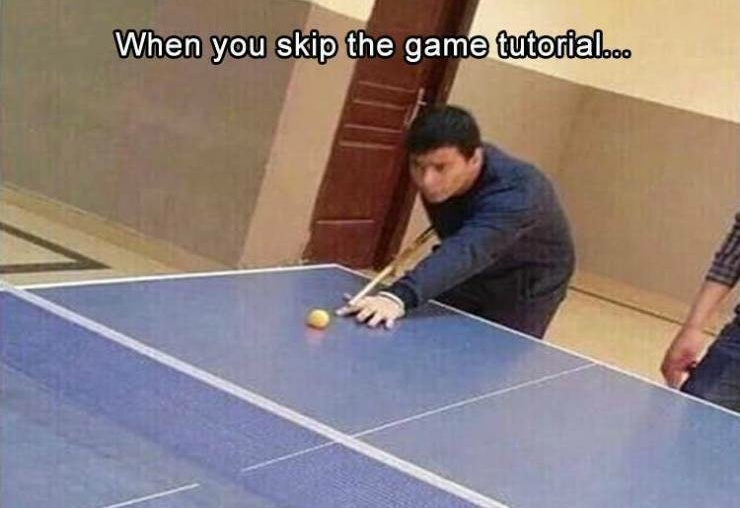

Table Tennis Leaderboard
PT22 Leaderboard
- Position Name Won Lost
- 1 Ričards Almanis 5-1
- 2 Artūrs Hugo 3-2
- 3 Niks Indriksons 0-10
| Rules of Table Tennis |
- 1.Games are played to 10 points
- 2. Alternative serves every 2 points are mandatory
- 3. Make sure to toss the ball straight up when serving
- Offical rules can be found on the International Table Tennis website HERE
Game Setup
- The game should be set up as per the table Tennis tournument at Ventspils Tehnikums
